Abstract
Bike theft has been an on-going issue in City of Toronto. In this paper we explore 2014-2019 bike theft data from Toronto Police Service. We find the trend for Toronto bike theft occurrence in regards of time, color of the bike, and location. Our findings have implications for preventing bike theft in Toronto for individuals, and the city as a whole.
Introduction
Do you bike to places in Toronto? If so, then have you ever worried about coming out of a shop, only to find a single wheel left locked to the tree? I certainly do, because it has happened to me three months ago. My friend in food delivery service revealed that he had lost 4 bikes during two months of working, to a point that he didn’t even bother to go to the police anymore. In this report, we investigate bike thefts in Toronto’s correlation with time period, bike color, recovery rate, and location. Our findings are able to prevent bikers in Toronto from bike thefts.
On average, more than 3 million dollars worth of bikes are getting stolen in Toronto every year, and only 1.17% of the stolen bikes are recovered. During a day, bike theft number peaks during rush hour and midnight. Also we have found that Bay Street Corridor is the most dangerous place to park you bikes. So next time when you have to park your bike there, make sure to double lock it! The most interesting findings in this report is the relation of bike colors and thefts. In general, common bike colors, such as black, gray, and white, are more likely to be stolen. On the other hand, bikes with bright colors are more likely to be recovered by the police.
In summary, this report demonstrates the pattern of bike theft in the past six years. With more information such as population distribution, average income distribution, bike color distribution, we could potentially understand the reason behind bike theft trends in Toronto with a more accurate conclusion. This report could be further improved by using more variables from the data set given, and combining with its findings. For example, occurrence location with each neighborhood, or police division with recovered bikes. However, bike theft problem is more complex than the variables we used, and we cannot firmly conclude that it has a correlation to the variables without further information.
Bike Theft by Time
It is improving!!
The graph ((1)-“Bike Theft Occurrence by Year”) visualizes the trend of bike theft occurrence from 2014 - 2019.
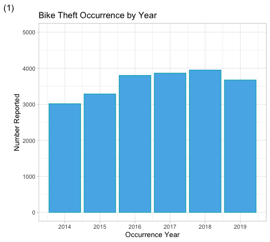
We can see a growing trend from 2014 to 2018. But 2019 broke the ascending trend. It is shown as the third lowest in 6 years. With the constant growing population of Toronto, this graph has shown positive result of public acknowledgment of bike theft prevention, and safety measures. So whatever we are doing to prevent bike theft, we are doing it right!
Your Bike can be stolen in winter too
From the graph((2)-“Bike Theft Occurrence by Month”), we’ve seen a predicable trend of significantly more bike theft from May to October as the weather allows more people to use their bikes.
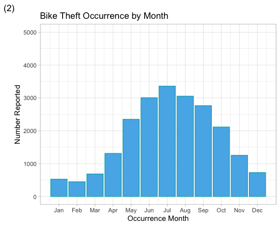
However, the bike thefts occurred in winter is higher than expectation where approximately 800 bikes get stolen during the winter. It is quite hard to imagine people biking in Toronto during the winter with three feet of snow, though some still might (just why???). It is more likely that winter bike thefts happen due to bikes parked at an insecure location for a long period of time.
In future studies we could connect winter theft occurrence to the premise type when the crime occurred to find which premise type is at a higher risk for a long term parking. If possible, park your bikes inside!(Or hide it well)
Which days are more dangerous for your bike?
The relation of bike thefts and day in a month is relatively stable. However there is a slight peak on the first day of a month and in the middle of a month.
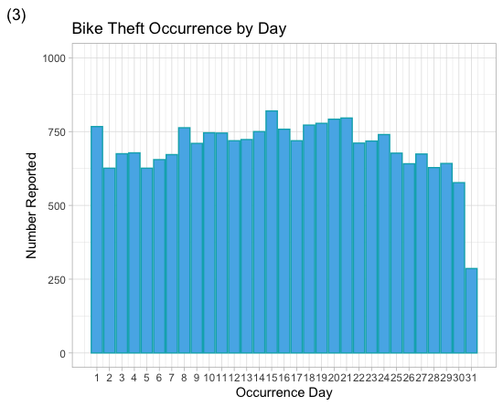
The 15th of a month has the highest risk of bike theft, and the 31st of a month is relatively the safest. (doesn’t mean you don’t have to lock your bike on the 31st!)
Note: The data on the 31st should be manipulated by multiplying 12/7. We got the value of 490.28 bikes revealing the more accurate counts. However it is still has the lowest bike theft rate.
Commute to work? Be extra careful during rush hour
The following graphs shows the bike theft counts and the corresponding time-period/hour. It is shown that more bike thieves are more active in the afternoon and evening((4)-“Bike Theft Occurrence by Time Period”). 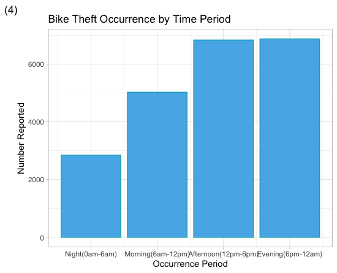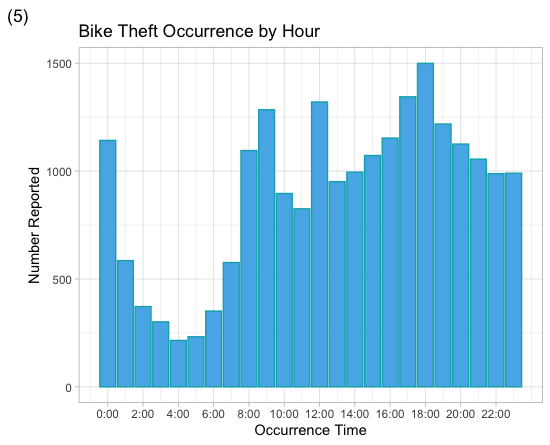
When we look at the specific hour when bike thefts occur((5)-“Bike Theft Occurrence by Hour”), the peaks are at 8/9 am, 12pm, and 5/6pm. It is during the rush hour thus more people are using/locking their bikes, thus makes breaking bike lock less noticeable. During the night and early morning, less bikes are stolen. But we do see a peak during that time at 12:00am.
“My bike was stolen, will I ever find it?”
Unfortunately, you likely won’t ever see your bike again. Even if you do, you probably won’t be its owner anymore.
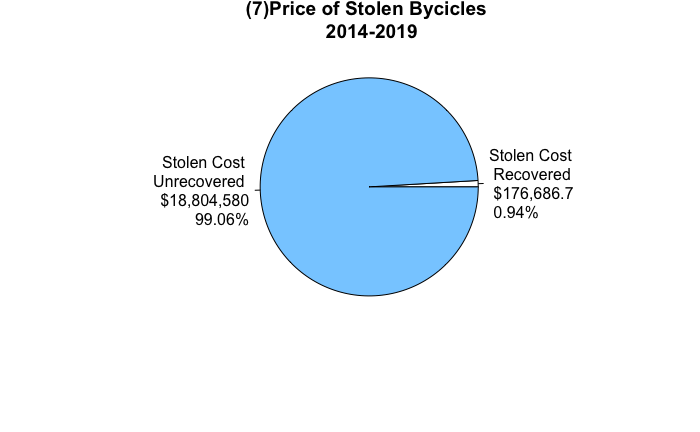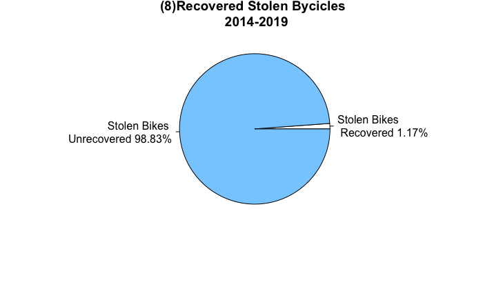
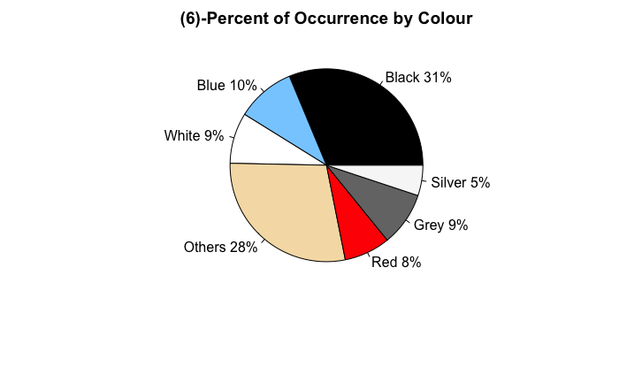
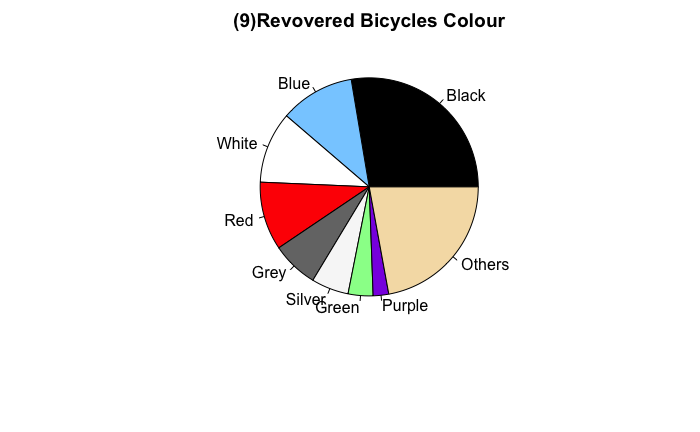
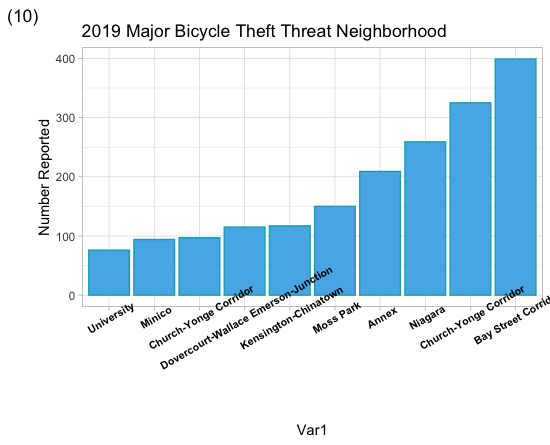
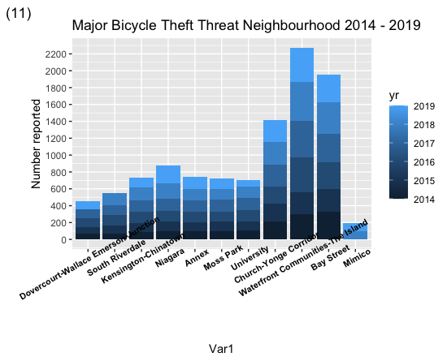